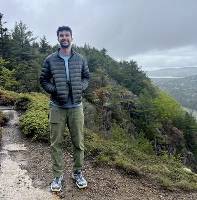
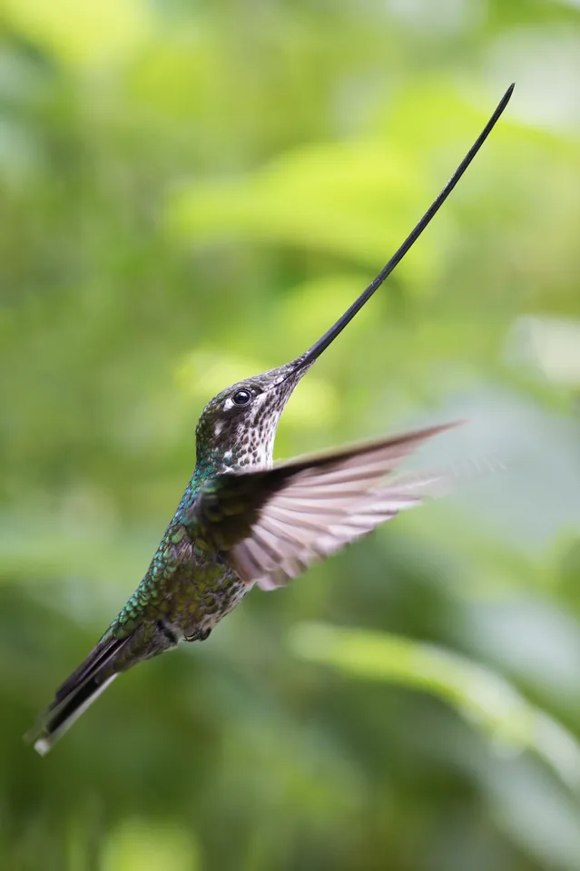
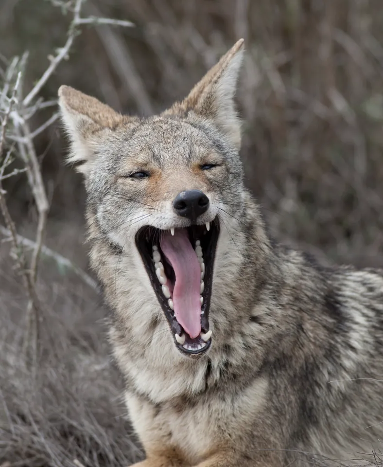
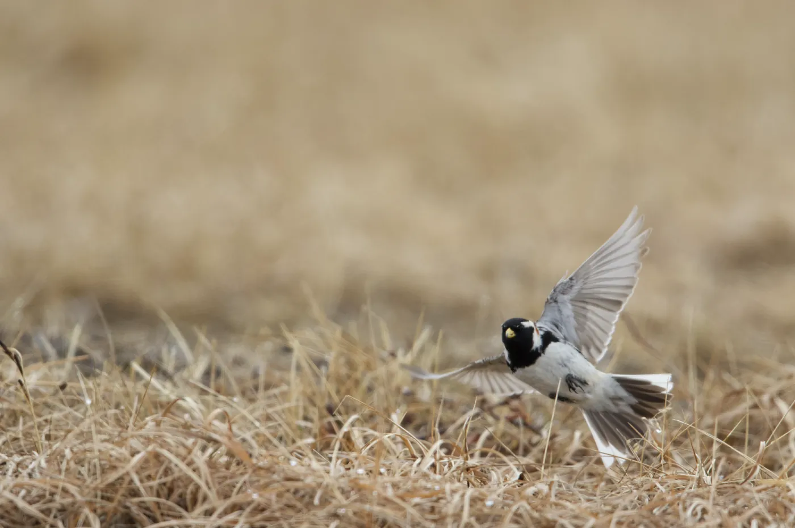
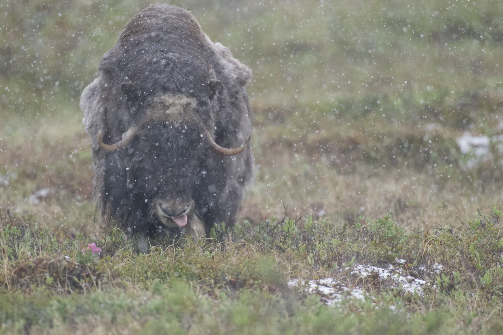
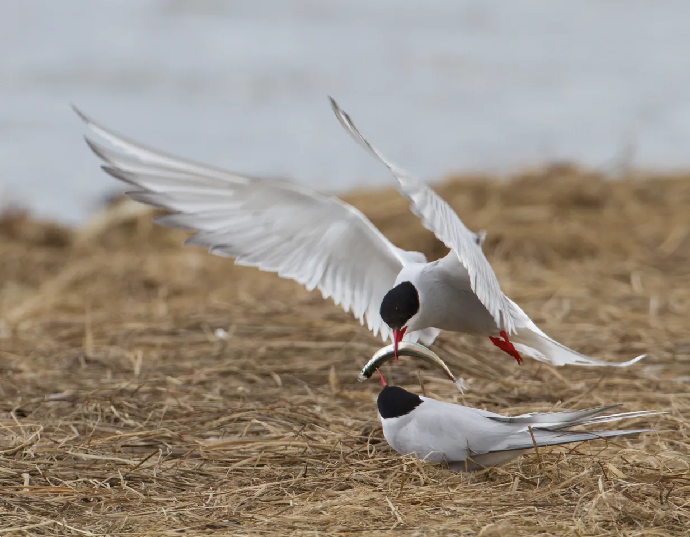
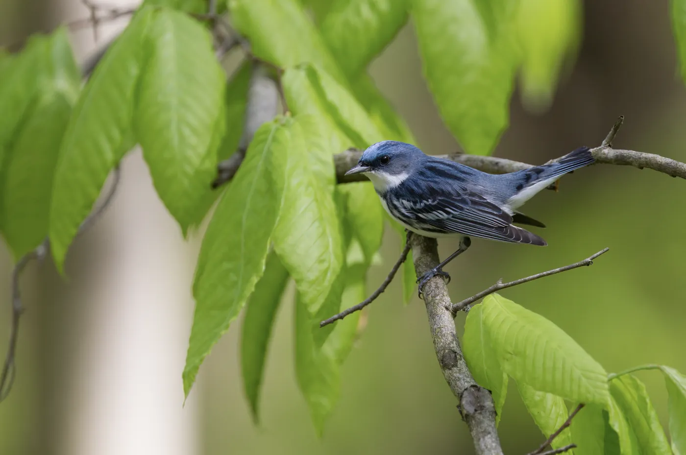
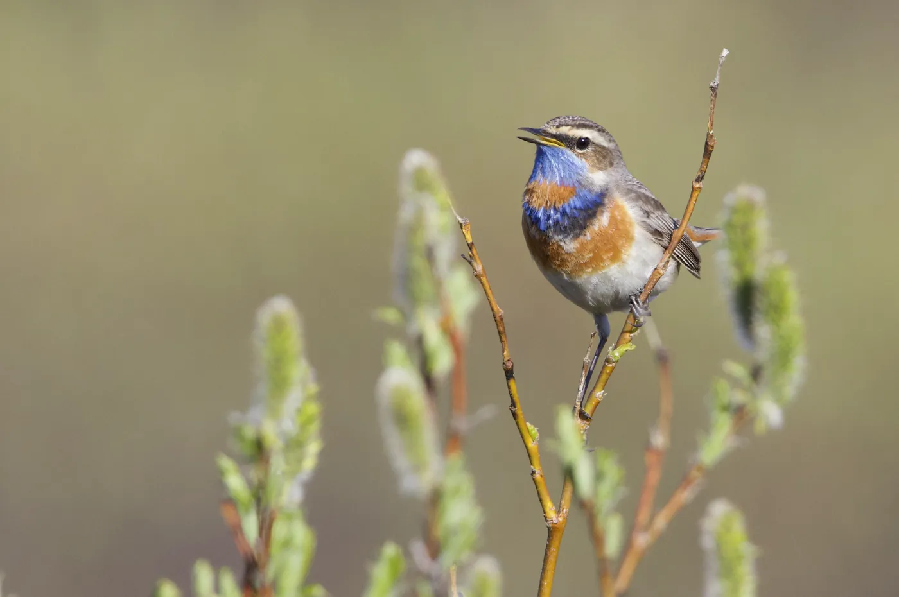

Hi, I'm Sina! I am a first year Ph.D. student at MIT studying Political Science and Statistics. I am advised by Ariel White.
I am interested in studying how computational techniques can be applied to study elections and political communication. I'm also interested in building new datasets and making existing ones more usable. For more details on my past work, see Research.
Over the past few years, I:
I do my best work with others and am always looking for new collaborators. In 2026 I will be presenting at SPSA, ESRA, and POLMETH and attending APSA. I live in Boston and you can reach me at sinas100 at mit.edu.






